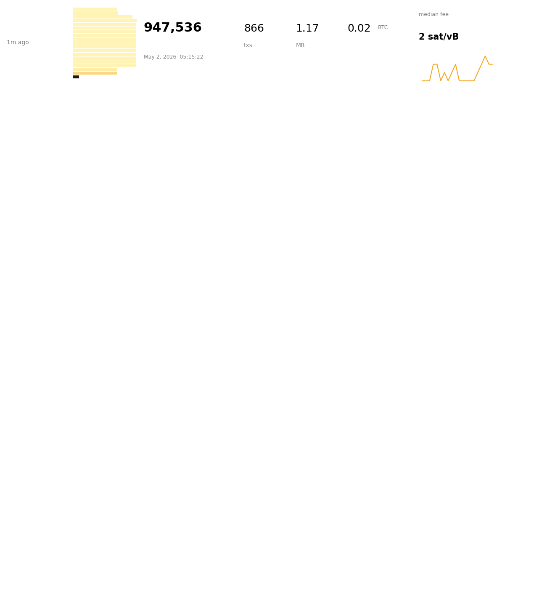

chain = Chain()
fig = blocks_view(chain, n=6)
fig--------------------------------------------------------------------------- RemoteProtocolError Traceback (most recent call last) File ~/src/slashbtc/.venv/lib/python3.14/site-packages/httpx/_transports/default.py:101, in map_httpcore_exceptions() 100 try: --> 101 yield 102 except Exception as exc: File ~/src/slashbtc/.venv/lib/python3.14/site-packages/httpx/_transports/default.py:127, in ResponseStream.__iter__(self) 126 with map_httpcore_exceptions(): --> 127 for part in self._httpcore_stream: 128 yield part File ~/src/slashbtc/.venv/lib/python3.14/site-packages/httpcore/_sync/connection_pool.py:407, in PoolByteStream.__iter__(self) 406 self.close() --> 407 raise exc from None File ~/src/slashbtc/.venv/lib/python3.14/site-packages/httpcore/_sync/connection_pool.py:403, in PoolByteStream.__iter__(self) 402 try: --> 403 for part in self._stream: 404 yield part File ~/src/slashbtc/.venv/lib/python3.14/site-packages/httpcore/_sync/http11.py:342, in HTTP11ConnectionByteStream.__iter__(self) 341 self.close() --> 342 raise exc File ~/src/slashbtc/.venv/lib/python3.14/site-packages/httpcore/_sync/http11.py:334, in HTTP11ConnectionByteStream.__iter__(self) 333 with Trace("receive_response_body", logger, self._request, kwargs): --> 334 for chunk in self._connection._receive_response_body(**kwargs): 335 yield chunk File ~/src/slashbtc/.venv/lib/python3.14/site-packages/httpcore/_sync/http11.py:203, in HTTP11Connection._receive_response_body(self, request) 202 while True: --> 203 event = self._receive_event(timeout=timeout) 204 if isinstance(event, h11.Data): File ~/src/slashbtc/.venv/lib/python3.14/site-packages/httpcore/_sync/http11.py:213, in HTTP11Connection._receive_event(self, timeout) 212 while True: --> 213 with map_exceptions({h11.RemoteProtocolError: RemoteProtocolError}): 214 event = self._h11_state.next_event() File /opt/homebrew/Cellar/python@3.14/3.14.2/Frameworks/Python.framework/Versions/3.14/lib/python3.14/contextlib.py:162, in _GeneratorContextManager.__exit__(self, typ, value, traceback) 161 try: --> 162 self.gen.throw(value) 163 except StopIteration as exc: 164 # Suppress StopIteration *unless* it's the same exception that 165 # was passed to throw(). This prevents a StopIteration 166 # raised inside the "with" statement from being suppressed. File ~/src/slashbtc/.venv/lib/python3.14/site-packages/httpcore/_exceptions.py:14, in map_exceptions(map) 13 if isinstance(exc, from_exc): ---> 14 raise to_exc(exc) from exc 15 raise RemoteProtocolError: peer closed connection without sending complete message body (received 12418958 bytes, expected 12871406) The above exception was the direct cause of the following exception: RemoteProtocolError Traceback (most recent call last) Cell In[11], line 4 1 #| eval: false 2 #| notest 3 chain = Chain() ----> 4 fig = blocks_view(chain, n=6) 5 fig Cell In[10], line 15, in blocks_view(chain, n, end_height, btc_usd) 11 subfigs = fig.subfigures(n, 1, hspace=0.0) 12 if n == 1: 13 subfigs = [subfigs] 14 for i, sf in enumerate(subfigs): ---> 15 block_card(chain, end_height - i, fig=sf, btc_usd=btc_usd) 16 return fig Cell In[9], line 13, in block_card(chain, height, fig, with_sparkline, btc_usd) 9 """Render one mempool.space-style block row. 10 11 Pass `btc_usd` (current spot) to also display a USD total-fee figure. 12 """ ---> 13 _blk, rows = block_feerates(chain, height) 14 s = block_summary(chain, height) 15 feerates, vsizes = feerate_buckets(rows, n_bins=24) 16 Cell In[4], line 4, in block_feerates(chain, height_or_hash) 2 def block_feerates(chain: Chain, height_or_hash: int | str) -> tuple[dict, list[tuple[int, float]]]: 3 """Return `(block_dict, [(vsize, feerate_sat_per_vB), ...])` skipping coinbase.""" ----> 4 blk = chain.block(height_or_hash, verbosity=3) 5 rows: list[tuple[int, float]] = [] 6 for tx in blk["tx"][1:]: # coinbase has no fee 7 try: File ~/src/slashbtc/slashbtc/core.py:114, in Chain.block(self, height_or_hash, verbosity) 108 "Block by height or hash. Verbosity 2 includes full tx data." 109 h = ( 110 self.block_hash(height_or_hash) 111 if isinstance(height_or_hash, int) 112 else height_or_hash 113 ) --> 114 return self.rpc.call("getblock", h, verbosity) File ~/src/slashbtc/slashbtc/core.py:69, in BitcoinRPC.call(self, method, *params) 67 "Invoke a Bitcoin Core RPC `method` with positional `params`." 68 self._id += 1 ---> 69 r = self._client.post( 70 "/", 71 json={ 72 "jsonrpc": "2.0", 73 "id": self._id, 74 "method": method, 75 "params": list(params), 76 }, 77 ) 78 r.raise_for_status() 79 body = r.json() File ~/src/slashbtc/.venv/lib/python3.14/site-packages/httpx/_client.py:1144, in Client.post(self, url, content, data, files, json, params, headers, cookies, auth, follow_redirects, timeout, extensions) 1123 def post( 1124 self, 1125 url: URL | str, (...) 1137 extensions: RequestExtensions | None = None, 1138 ) -> Response: 1139 """ 1140 Send a `POST` request. 1141 1142 **Parameters**: See `httpx.request`. 1143 """ -> 1144 return self.request( 1145 "POST", 1146 url, 1147 content=content, 1148 data=data, 1149 files=files, 1150 json=json, 1151 params=params, 1152 headers=headers, 1153 cookies=cookies, 1154 auth=auth, 1155 follow_redirects=follow_redirects, 1156 timeout=timeout, 1157 extensions=extensions, 1158 ) File ~/src/slashbtc/.venv/lib/python3.14/site-packages/httpx/_client.py:825, in Client.request(self, method, url, content, data, files, json, params, headers, cookies, auth, follow_redirects, timeout, extensions) 810 warnings.warn(message, DeprecationWarning, stacklevel=2) 812 request = self.build_request( 813 method=method, 814 url=url, (...) 823 extensions=extensions, 824 ) --> 825 return self.send(request, auth=auth, follow_redirects=follow_redirects) File ~/src/slashbtc/.venv/lib/python3.14/site-packages/httpx/_client.py:928, in Client.send(self, request, stream, auth, follow_redirects) 926 except BaseException as exc: 927 response.close() --> 928 raise exc File ~/src/slashbtc/.venv/lib/python3.14/site-packages/httpx/_client.py:922, in Client.send(self, request, stream, auth, follow_redirects) 920 try: 921 if not stream: --> 922 response.read() 924 return response 926 except BaseException as exc: File ~/src/slashbtc/.venv/lib/python3.14/site-packages/httpx/_models.py:881, in Response.read(self) 877 """ 878 Read and return the response content. 879 """ 880 if not hasattr(self, "_content"): --> 881 self._content = b"".join(self.iter_bytes()) 882 return self._content File ~/src/slashbtc/.venv/lib/python3.14/site-packages/httpx/_models.py:897, in Response.iter_bytes(self, chunk_size) 895 chunker = ByteChunker(chunk_size=chunk_size) 896 with request_context(request=self._request): --> 897 for raw_bytes in self.iter_raw(): 898 decoded = decoder.decode(raw_bytes) 899 for chunk in chunker.decode(decoded): File ~/src/slashbtc/.venv/lib/python3.14/site-packages/httpx/_models.py:951, in Response.iter_raw(self, chunk_size) 948 chunker = ByteChunker(chunk_size=chunk_size) 950 with request_context(request=self._request): --> 951 for raw_stream_bytes in self.stream: 952 self._num_bytes_downloaded += len(raw_stream_bytes) 953 for chunk in chunker.decode(raw_stream_bytes): File ~/src/slashbtc/.venv/lib/python3.14/site-packages/httpx/_client.py:153, in BoundSyncStream.__iter__(self) 152 def __iter__(self) -> typing.Iterator[bytes]: --> 153 for chunk in self._stream: 154 yield chunk File ~/src/slashbtc/.venv/lib/python3.14/site-packages/httpx/_transports/default.py:126, in ResponseStream.__iter__(self) 125 def __iter__(self) -> typing.Iterator[bytes]: --> 126 with map_httpcore_exceptions(): 127 for part in self._httpcore_stream: 128 yield part File /opt/homebrew/Cellar/python@3.14/3.14.2/Frameworks/Python.framework/Versions/3.14/lib/python3.14/contextlib.py:162, in _GeneratorContextManager.__exit__(self, typ, value, traceback) 160 value = typ() 161 try: --> 162 self.gen.throw(value) 163 except StopIteration as exc: 164 # Suppress StopIteration *unless* it's the same exception that 165 # was passed to throw(). This prevents a StopIteration 166 # raised inside the "with" statement from being suppressed. 167 return exc is not value File ~/src/slashbtc/.venv/lib/python3.14/site-packages/httpx/_transports/default.py:118, in map_httpcore_exceptions() 115 raise 117 message = str(exc) --> 118 raise mapped_exc(message) from exc RemoteProtocolError: peer closed connection without sending complete message body (received 12418958 bytes, expected 12871406)
